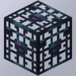
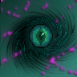
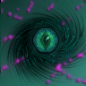

Spigot Plugins by MrButtersDev
Welcome to the official plugin page of MrButtersDev! Here you will find a collection of custom Spigot plugins designed to enhance your Minecraft server.


 

Plugin List
 AutoPickup
AutoPickup SilkySpawnersLite
SilkySpawnersLite LiteSpawners
LiteSpawners Wax Indicator
Wax Indicator Slime Indicator
Slime Indicator RTP-Me
RTP-Me Seeeeds
Seeeeds SilkyShop (no longer available)
SilkyShop (no longer available) SilkySpawners (no longer available)
SilkySpawners (no longer available)
Get Started
- Download the plugins
- Check out the documentation
- Join the community Discord server for support and discussions
Contribute
If you have ideas, feedback, or bug reports, feel free to open an issue or contribute via pull requests in the GitHub repository.